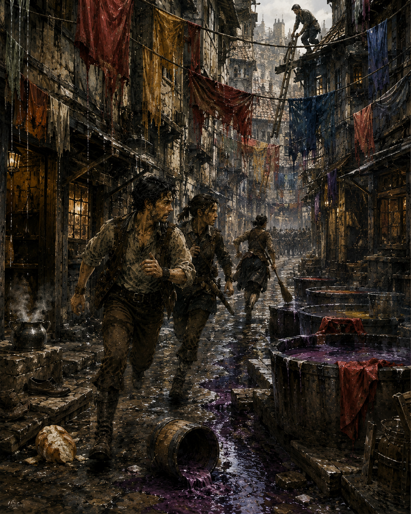

Senn was faster than she looked. That was inconvenient. She had a broom, work shoes, and thirty-one goats behind a closed gate. None of those things suggested speed. She disappeared around the corner before Cal and I reached it.
“Left?” he asked.
“Dyer’s Lane.”
“That means nothing to me.”
“Me either.”
We turned left. Darrowmere changed within one street. The square and command post had been stone, carts, officials, people doing jobs they understood. Here the buildings leaned close. Workshops below. Rooms above. Narrow passages between them. Lines of dyed cloth stretched overhead from upper windows, red and yellow and blue dripping into buckets because somebody had abandoned them halfway through rinsing.
The street smelled of wet wool, vinegar, smoke, and something metallic. Doors stood open. A bucket rolled in a gutter. No people. That was wrong. Not empty. Abandoned recently. There was a difference. A kettle still steamed on a doorstep. A pair of shoes sat neatly outside one door. Someone had dropped half a loaf in the mud.

One long bell. Two short. East breach. Again.
“Which way?” Cal asked.
I listened. Senn shouted somewhere ahead. Not words. A name.
“Mira!”
We ran. My body objected immediately. Bruised hip. Shoulder. Headache. No sword. No knife. NO CASTING tied to my wrist. Excellent equipment for an emergency. We passed a dye yard with six waist-high vats. Purple liquid had spilled across the stones. A man stood on a roof pulling a ladder up behind him.
“Inside!” he shouted.
“We’re looking for a girl!”
“Everyone is!”
Useful. Not useful. Cal pointed. Senn. She was at the next intersection, arguing with two Darrowmere watch. They had overturned a handcart across the lane. One held a spear. The other had a crossbow.
“Senn,” the spearwoman said, “no.”
“My daughter is there.”
“We sent someone.”
“You sent Jory.”
“Yes.”
“He’s sixteen.”
“He’s watch.”
“He’s sixteen.”
Senn tried to go around. The spearwoman blocked her. Cal slowed. I did too. Good. Competent people already here. Do not become another problem.
“What house?” I asked.
Senn pointed past the barricade.
“Blue shutters. End of lane.”
The crossbowman said, “Girl’s name?”
“Mira.”
“Age?”
“Twelve.”
“Alone?”
“She was with my mother.”
“Your mother?”
“Eda.”
“Age?”
“Old.”
“Senn.”
“Sixty-eight.”
The crossbowman nodded.
“Anyone else?”
“No.”
The spearwoman looked at us.
“Guild?”
“Bronze,” Cal said.
She looked at my wrist.
“No casting?”
“Yes.”
“Weapon?”
“No.”
She looked at Cal’s bandaged arm.
“Wonderful.”
“I have a sword.”
“One arm.”
“Other one works.”
Senn said, “Are we finished?” The spearwoman ignored her.
“Creature crossed roofs near the lane three minutes ago. Another was seen behind the tannery. We have two watch inside pulling residents. You stay here.”
That was correct. I hated it. Something watched us. I turned. Roofline. Windows. Cloth lines. Nothing.
“What?” Cal asked.
“Nothing.”
The word came too quickly. He followed my eyes.
“What did you see?”
“Nothing.”
“That is different.”
“Yes.”
Senn shouted, “Mira!” A voice answered. Faint.
“Ma!”
Senn moved. The spearwoman caught her.
“Mira!” Senn screamed.
“Ma!”
Blue shutters. End of lane. Alive. Good. The crossbowman cupped his hands.
“Mira! Stay inside!”
“No!”
Not ideal. A second voice called from the same direction. Older.
“Roof!”
Everyone looked up. Gray moved across red cloth. Not creature. Cloth. Wind. No wind. I stared. The red sheet sagged. Something had crossed the line above it. I had not seen what.
“There,” I said.
Crossbowman raised.
“Where?”
I pointed. Nothing. He waited. Nothing. Spearwoman said, “Did you see it?”
“No.”
She looked at me.
“I saw the cloth move.”
“Could be wind.”
“Yes.”
There was no wind. I did not say that. She already knew.
“Back,” she ordered.
We backed. All of us except Senn, who had to be physically moved. The lane narrowed toward the blue shutters. Three buildings on each side. Dye shed. Cooper. House. Another house. Roof bridges made from planks. People here moved goods above street level. Useful. Dangerous. Something scraped tile. Left. I turned. Nothing. My skin tightened. Not fear exactly. Old sensation. A dungeon corridor after the traps stopped.
A forest when birds stopped calling. A room where someone had already decided to kill you and was waiting for position. Watched. I knew that feeling. I also knew how often experienced people turned ordinary silence into evidence because they wanted their instincts to be magic. Know. Think. Check. I knew I felt watched. I thought something might be tracking movement from the roofs.
I could check nothing. Wonderful. A whistle sounded deeper in the lane. Two short. The spearwoman answered with one. A watchman appeared at a doorway halfway down. Young. Jory, presumably.
“Sella house clear!”
“Next?”
“Locked!”
“Mira!” Senn yelled.
The blue shutters opened. A girl’s face appeared.
“Ma!”
“Stay there!”
The girl did not stay there. Of course. She disappeared from the window. Senn made a sound that contained several religions. Jory ran toward the blue-shutter house. Something moved above him. This time I saw enough. Not shape. Shadow. Wrong direction.
“Jory!”
He looked back. Bad.
“Roof!”
He looked up. Worse. A gray body came down behind him. The crossbow snapped. Bolt struck wall. Creature landed. Jory ran. Good. No fight. He ran toward us. Creature followed. Spearwoman lowered her weapon.
“Clear!”
We moved aside. She had the line. Jory passed. Creature came. She thrust. Not at chest. Low. Front leg. The creature changed direction. Too fast. Exactly as before. But she expected it. Her spear moved with it. Darrowmere had learned too. Point cut the shoulder. Creature screamed and went up the wall. Crossbowman fired. Miss. Creature reached roof. Gone. Nobody chased. Excellent.
Jory bent over breathing. Spearwoman slapped the back of his head.
“You looked.”
“You yelled.”
“Not me.”
He looked at me. I raised my hand.
“Sorry.”
“Why yell if I’m not supposed to look?”
Fair. Spearwoman said, “Next time run first.”
“Next time?”
“Move.”
Jory moved. They had adapted in hours. Senn said, “My daughter.”
“Yes,” the spearwoman said. “Now we know the roof route.”
She pointed to the blue house.
“Jory, rear access?”
“Alley connects dye shed.”
“Crossbow, roof cover.”
The man nodded. She looked at Cal.
“Can you hold a door?”
“Yes.”
“You?”
Me.
“I can also hold a door.”
“No magic?”
“No magic.”
“Good. You two come.”
Senn said, “Me.”
“No.”
“I know the house.”
“Tell us.”
“Back door sticks. Kitchen window opens outward. Stairs turn right. My mother sleeps downstairs because of her knee. Mira’s room is above.”
The spearwoman nodded.
“Anything dangerous inside?”
“Eda.”
The spearwoman almost smiled.
“Stay.”
We went. Not down the lane. Through the dye shed. Smarter. The building was dark and warm. Vats filled most of the floor. Blue wool hung from racks. A cat watched us from a shelf and seemed unimpressed by the emergency. The spearwoman finally gave us her name.
“Iris.”
Cal said, “Cal.”
“Greg.”
“I heard.”
I disliked that. Iris pointed to a rear door.
“Jory takes alley. Cal holds here. Greg with me.”
“Why?”
“You’re unarmed.”
“That usually argues for farther away.”
“You ask useful questions.”
That was not enough armor. We entered the alley. Narrow. Brick on one side. Wood on the other. Overhead, two planks connected buildings. I looked up. Nothing. Watched. Again. Not from ahead. Behind? I turned. Cal stood in the dye shed doorway. Beyond him, racks. Cat. Nothing.
“What?” Iris whispered.
“I feel watched.”
“That a magic thing?”
“No.”
“Useful?”
“No.”
“Then keep it.”
I liked her too. This was ridiculous. We moved. The blue house’s back door was twenty yards away. Jory reached it first. Tried latch. Stuck. Of course. He shoved. Nothing. Iris said, “Window.” Kitchen window. Outward. Jory lifted it. A gray head appeared inside. No. Old woman. White hair. She hit him with a pan. Jory fell backward.
“Eda!” Iris hissed.
“Who are you?”
“Watch!”
“Prove it.”
Jory sat in the alley holding his forehead.
“Ma’am.”
Eda looked at him.
“Oh. Jory.”
“You know me?”
“You stole pears.”
“When I was nine.”
“You stole pears.”
Good.
“Open the door,” Iris said.
“It sticks.”
“We know.”
Eda disappeared. Door opened thirty seconds later. She had a knife in one hand.
“Mira’s upstairs.”
“Why?”
“She went for the box.”
“What box?”
“Her father’s.”
Senn had not mentioned a box. Of course. People never remembered the object until the object became the problem. Iris pointed.
“Jory, take Eda.”
“I can walk,” Eda said.
“Then walk with Jory.”
“I don’t like Jory.”
“You know him.”
“Unfortunately.”
They left. Iris looked at me.
“Stairs.”
I looked up. Watched. Not feeling now. Certainty? No. Still feeling. The house creaked. Ordinary wood. Outside, a crossbow snapped. Everyone froze. One shot. No whistle. Iris waited. Then moved. We climbed. Right turn. Senn had been exact. At the top, a short hall. Mira’s door open. No girl.
“Mira,” Iris called quietly.
Something knocked. Back room. We entered. Mira was under the bed. Not hiding. Reaching. Her entire arm disappeared beneath it.
“I almost have it.”
Iris closed her eyes.
“What?”
“The box.”
“Leave it.”
“No.”
“Mira.”
“My dad made it.”
There it was. Not rational. Not irrational either. Twelve. Father. Box. Iris looked at me. I knew what she wanted. Move the girl. Not optimize the box. I crouched.
“Mira.”
She looked at me.
“Who are you?”
“Greg.”
“That’s a stupid name.”
“Today has been difficult enough.”
She stared. Good. Attention.
“Your mother is outside.”
“I know.”
“She hit a watchwoman with a broom.”
“No she didn’t.”
“Not yet.”
Mira smiled despite herself.
“Come out.”
“I can reach it.”
The house roof creaked. Not wood. Weight. Iris heard it. Her eyes went up.
“Mira. Now.”
The girl froze. There. Fear finally got through. She pulled her arm out. No box. I grabbed her wrist. Iris grabbed my coat.
“No running.”
“What?”
“Roof.”
Right. Movement triggers? Maybe. Creature could be above. We moved slowly into the hall. Scrape. Overhead. Following. Mira squeezed my hand.
“Is it one?”
“I don’t know.”
“Did you see it?”
“No.”
“Then how do you know?”
“I don’t.”
Good answer. Bad comfort. Downstairs. Halfway. Something hit the roof. Hard. Dust fell. Mira screamed. We ran. No more slow. Kitchen. Back door. Jory waiting at alley mouth.
“Go!”
Iris pushed Mira toward him. The girl ran. I followed. Something crashed through the upstairs window. Glass behind us. Cal shouted from the dye shed.
“Move!”
We moved. Mira reached Jory. Jory grabbed her. Roof tiles shattered. Creature landed in the alley between us and the dye shed. Not the one Iris cut. No shoulder wound. Fresh. It did not attack. That was worse. It looked at Mira. Then me. Then Iris. Still. The first still creature I had seen. Black eyes. No visible white. Nostrils opening and closing.
Smelling? Listening? Thinking? My skin went cold. Watched. All chapter. No. All lane. Was this it? Impossible to know. The creature tilted its head. Not animal-curious. That was interpretation. Dangerous. Do not humanize unknown behavior. Iris lowered her spear. The alley was too narrow. Good for spear. Bad for turning. Jory had Mira behind him. Cal on far side. Creature between.
“Back,” Iris said.
We backed toward the house. Creature stayed. One step. It matched. Not charged. Matched.
“Greg,” Iris whispered.
“I know.”
“Do you?”
“No.”
Better. My wrist tag brushed my skin.
NO CASTING.
I had mana. Not much. Enough for one stupid thing. No. If I broke it the first time danger became inconvenient, it had never been a restriction. Iris shifted spear point. Creature’s eyes moved to it. There. Attention. Maybe.
“Jory,” I said.
“What?”
“Take Mira.”
“I have her.”
“Not you. Cal.”
Cal understood. He moved sideways. Creature’s head followed. Not Mira. Movement. Maybe. Jory transferred Mira to Cal. Creature tracked Cal. No. Tracked Mira? Could not tell.
“Take her through the shed.”
Cal did. Creature tensed. Iris moved the spear. It looked back. Attention could be pulled. That was enough. Not truth. Enough.
“Now,” Iris said.
She stepped forward. Not thrust. Occupied space. Creature compressed. I knew what came next.
“Left.”
Iris went left before asking. Creature exploded right. Past us. Not toward Mira. Up the wall. Gone. We did not chase. We ran. Through the dye shed. Cat still there. Outside. Barricade. Senn saw Mira. Everything else stopped mattering. She hit the girl. One open hand against the shoulder.
Then pulled her in so hard Mira disappeared against her dress.
“You stupid, stupid, stupid child.”
“I got the box.”
Senn pulled back.
“What?”
Mira reached inside her coat. Small wooden box. She had gotten it after all. I stared.
“When?”
Mira looked at me like I was stupid too.
“With my other hand.”
Of course. Senn started crying. Then laughing. Then both. Eda arrived behind them with Jory.
“I told her to leave it.”
“You helped her hide it,” Senn said.
“I did not.”
“You always help her.”
“She has good instincts.”
“She went upstairs during a breach.”
“Except today.”
Again. Iris was already reporting to the crossbowman. Creature in alley. No attack. Observed tracking movement or person, uncertain. Exited roofward. No pursuit. I looked back toward Dyer’s Lane. Red cloth overhead. Blue shutters. Empty windows. Nothing. Still watched. The feeling had not gone. That mattered. Or it did not. Cal came beside me.
“You still feel it?”
I looked at him.
“How did you know?”
“You’ve checked the roofs fourteen times.”
“Fourteen?”
“Maybe.”
I looked again. Nothing.
“Could be the creatures.”
“Yes.”
“Could be people hiding.”
“Yes.”
“Could be you hit your head.”
“Yes.”
“Could be nothing.”
“Yes.”
He waited. I hated him for learning the method.
“What do you think?” he asked.
I looked at the roof where the creature had disappeared. Then farther. Beyond it. A chimney. Bell tower. Laundry lines. Windows. Too many places for eyes.
“I think something has been watching how we move.”
“Creature?”
“I don’t know.”
“Person?”
“I don’t know.”
“Magic?”
“I don’t know.”
Cal nodded.
“Useful.”
“No.”
Iris heard us.
“What?”
“Nothing confirmed,” I said.
“Then report the feeling separately.”
I looked at her. She shrugged.
“People survive by noticing things before they can prove them. They die by treating the noticing like proof.”
That was annoyingly good. We returned west with Senn, Mira, Eda, and the remaining watch. Nobody attacked us. The bells stopped before we reached the square. That should have made me feel better. It did not. At command, Doven took the breach report. Two creatures confirmed inside the wall. One driven out. One unaccounted for. No deaths. Three minor injuries. One missing box recovered despite explicit instructions.
Doven looked at Mira. She held it tighter. He did not ask. Then Iris said, “Greg has an unconfirmed observation.” I glared at her. She waited. Doven looked at me.
“What?”
I could have made it sound better. Instinct. Experience. Pattern recognition. Predator behavior. I had words that made uncertainty wear a uniform. I did not use them.
“I felt watched from the time we entered Dyer’s Lane.”
“By what?”
“I don’t know.”
“Did you see anything?”
“Several movements consistent with creatures. Nothing that explains the entire feeling.”
“Magic?”
“Nothing detected.”
“Were you checking?”
“No casting. No detection method.”
“Could it be nerves?”
“Yes.”
“Could it be a creature?”
“Yes.”
“Could it be a person?”
“Yes.”
Doven wrote something. That was all.
“What did you write?”
He turned the paper.
UNCONFIRMED: POSSIBLE OBSERVATION FROM ROOFS / MOVEMENT TRACKING.
No monster. No watcher. No certainty. Good. I nodded. Doven looked at my wrist.
“You cast?”
“No.”
That surprised him. It surprised me too.
“Good.”
Alden sat against the far wall. Still there. Still furious about it. He looked at me.
“Anything happen?”
I looked at the NO CASTING tag. Then at my empty sword belt. Then at the blood still under my fingernails.
“A goat stood on me.”
Alden waited.
“That’s all?”
“No.”
“Thought so.”
I sat beside him. Outside, Darrowmere resumed making noise. Hammers. Carts. People. Someone shouting about missing chickens. The bell did not ring. I looked at the window. Nothing looked back. That was not the same as nothing being there.